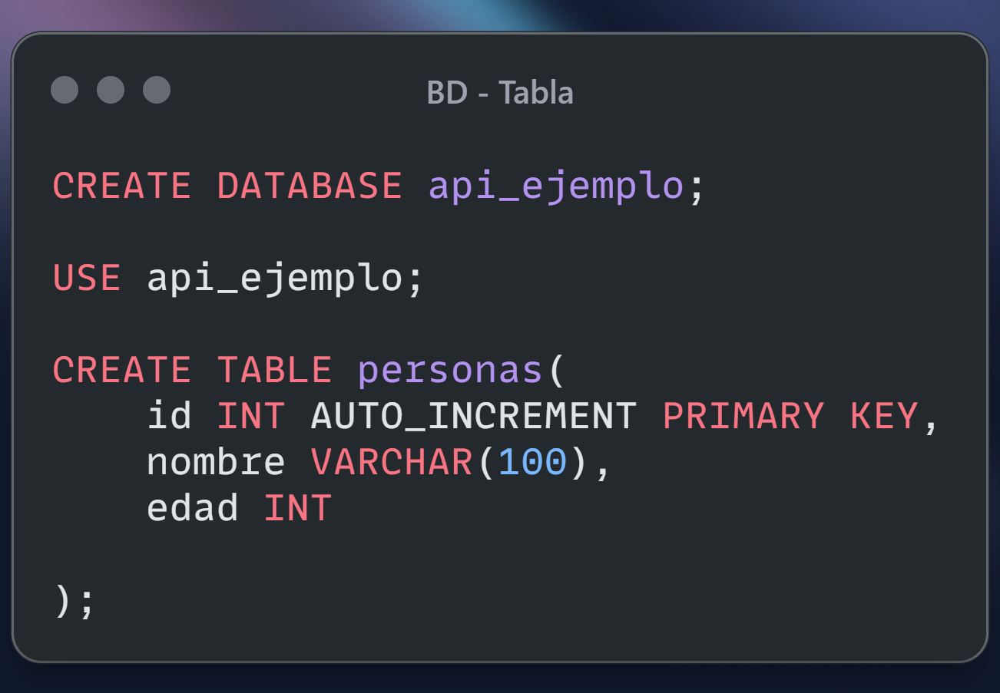
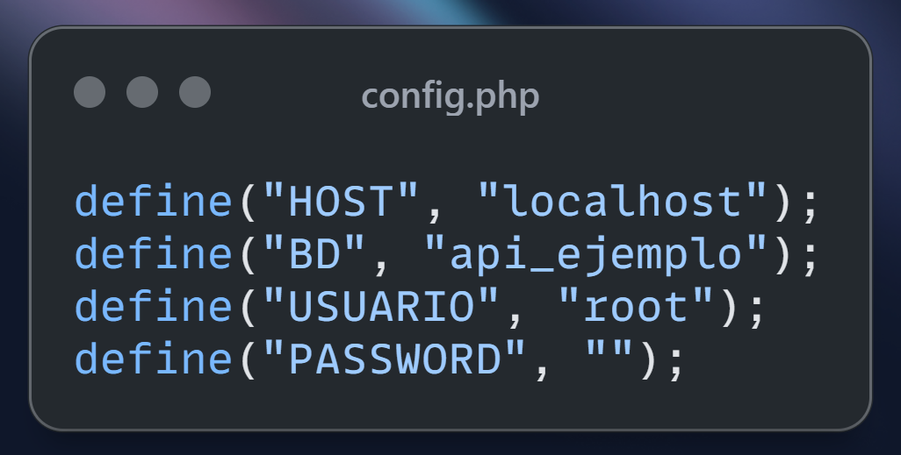
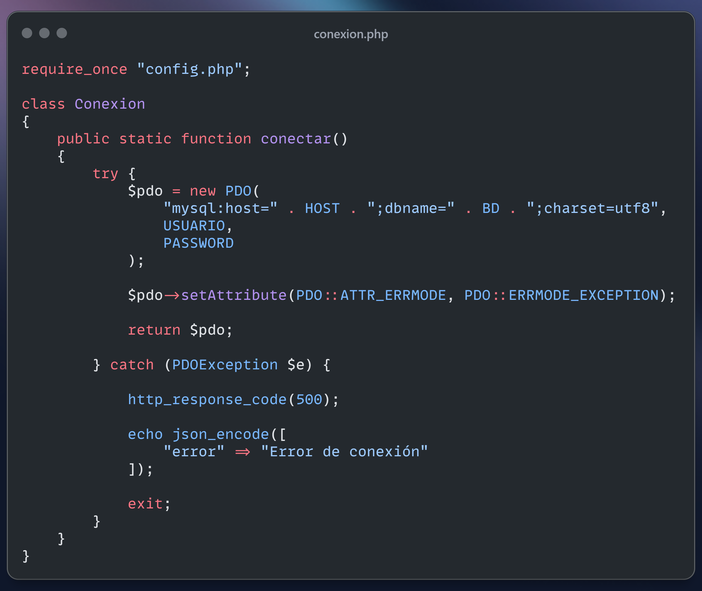
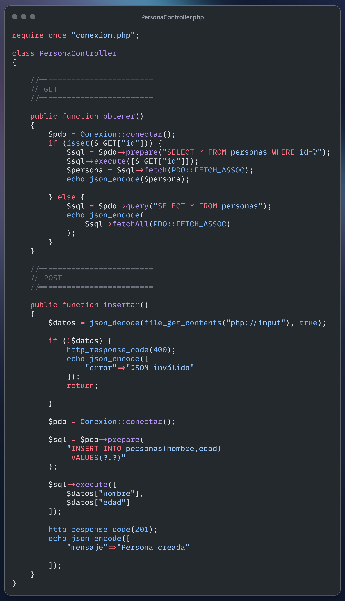
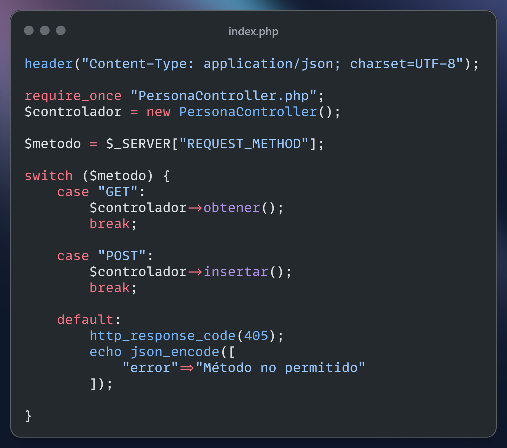
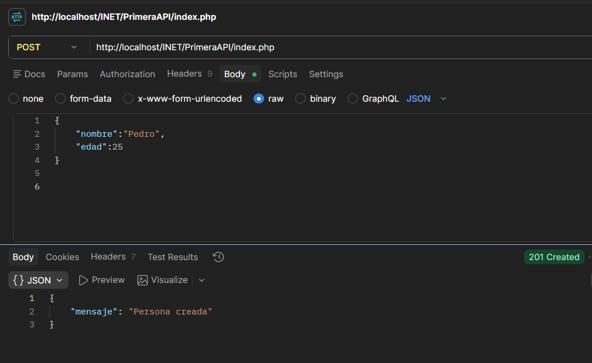

¿Qué vamos a construir?
Una API mínima para el recurso personas
La idea de fondo
Una API, en este contexto, es simplemente un archivo PHP que recibe una petición HTTP,
la interpreta según su método (GET, POST, etc.)
y responde con datos en formato JSON. No hay HTML de por medio: el cliente (en este caso, Postman)
envía la petición, y el servidor contesta con información pura para que otro sistema la consuma.
En esta primera vuelta vamos a poder listar personas, consultar una persona por id y crear una persona nueva. Todo con cuatro archivos chicos, cada uno con una responsabilidad clara.
Lo que queda deliberadamente afuera
- No hay un sistema de rutas: cada petición cae siempre en
index.php, y ahí se decide qué hacer según el método HTTP. - No se valida en profundidad lo que llega del cliente (más allá de comprobar que el JSON sea válido).
- No hay operaciones de actualización ni borrado todavía — eso queda como desafío al final.
Estructura de archivos
Cada capa depende solo de la que tiene debajo
↓ requiere
↓ requiere
↓ requiere
¿Por qué separar así?
Cada archivo hace una sola cosa. Si mañana cambia el usuario de la base de datos, se toca
config.php y nada más. Si cambia la lógica de negocio, se toca el
controlador. Es una forma simple de organizar el código antes de pasar a un framework o a un
sistema de rutas más elaborado.
Base de datos
Una tabla simple para arrancar

Ejecutar en phpMyAdmin o en la consola de MySQL antes de tocar código PHP
Qué hace este script
CREATE DATABASEcrea la baseapi_ejemplo.USEindica que las siguientes instrucciones trabajan sobre esa base.- La tabla
personastiene unidautoincremental como clave primaria, unnombrey unaedad.
Con esto ya hay un lugar real donde guardar y leer datos desde PHP.
config.php
Capa de configuración

config.php — transcribir a mano, no copiar y pegar
Qué guarda
Cuatro constantes creadas con define(): HOST,
BD, USUARIO y PASSWORD.
Al ser constantes, no pueden reasignarse una vez definidas, y quedan disponibles en cualquier
archivo que incluya este.
Separar estos datos en su propio archivo evita repetir strings de conexión por todos lados y deja un único lugar para cambiar credenciales si el proyecto se mueve de servidor.
conexion.php
Capa de conexión

conexion.php — transcribir a mano, no copiar y pegar
Qué hace la clase Conexion
- Tiene un único método estático,
conectar(), así se puede llamar sin instanciar la clase:Conexion::conectar(). - Arma el DSN de PDO uniendo
HOSTyBDdesdeconfig.php. PDO::ATTR_ERRMODEenERRMODE_EXCEPTIONhace que cualquier error de SQL lance una excepción en vez de fallar en silencio.- El
try/catchatrapaPDOException: si la conexión falla, responde con código500y corta la ejecución conexit.
PersonaController.php
Capa de controlador

PersonaController.php — transcribir a mano, no copiar y pegar
obtener() — responde a GET
Si llega un id por query string ($_GET["id"]),
busca una sola persona con una consulta preparada. Si no llega ningún id,
devuelve la tabla completa. En ambos casos, el resultado se imprime con
json_encode().
insertar() — responde a POST
Lee el cuerpo crudo de la petición con file_get_contents("php://input")
y lo convierte de JSON a arreglo asociativo con json_decode(..., true).
Si el JSON no es válido, corta con 400. Si es válido, inserta con una
consulta preparada (? como placeholders) y responde 201.
index.php
Punto de entrada

index.php — transcribir a mano, no copiar y pegar
El corazón del archivo: $_SERVER["REQUEST_METHOD"]
Cada petición HTTP llega con un verbo (método) que indica la intención del cliente:
GET para pedir datos, POST para crear un
recurso, entre otros. PHP expone ese verbo en la variable superglobal
$_SERVER, bajo la clave "REQUEST_METHOD".
Este archivo lo guarda en $metodo y usa un switch
para decidir qué hacer:
case "GET"→ llama a$controlador->obtener().case "POST"→ llama a$controlador->insertar().default→ cualquier otro método responde405 Método no permitido.
Antes de todo eso, header("Content-Type: application/json; charset=UTF-8")
le avisa al cliente que la respuesta va a ser JSON, no HTML.
Probando la API con Postman
Sin frontend todavía — el cliente es la herramienta de testing

POST a http://localhost/INET/PrimeraAPI/index.php
Qué está pasando en esta captura
- El método elegido es
POST, apuntando aindex.php. - En la pestaña
Body → raw → JSONse envía{"nombre":"Pedro","edad":25}. - Ese cuerpo es exactamente lo que
insertar()lee conphp://input. - La respuesta llega con
201 Createdy el JSON{"mensaje":"Persona creada"}.
Postman permite armar la petición completa (método, URL, headers, body) sin necesitar todavía una página HTML con formularios — ideal para probar la API de forma aislada.
Códigos de respuesta usados
Cada familia de código cuenta una historia distinta
Se usa en insertar() cuando la persona se guardó correctamente en la base de datos.
Se dispara cuando json_decode() no logra interpretar el cuerpo enviado como JSON válido.
Responde el default del switch cuando llega un método que no es GET ni POST.
Se usa en conexion.php si la conexión a MySQL falla dentro del catch.
¿Y el 200?
Cuando obtener() responde correctamente, no se llama explícitamente
a http_response_code(). PHP, por defecto, responde con
200 OK mientras no se indique otra cosa. Es un buen punto para tener
en cuenta: los códigos que no se fijan a mano no desaparecen, simplemente toman el valor por
defecto del servidor.
| Rango | Significa | Ejemplo en esta API |
|---|---|---|
| 2xx | La petición se procesó con éxito | 200 (implícito), 201 |
| 4xx | Error del lado del cliente | 400, 405 |
| 5xx | Error del lado del servidor | 500 |
Para seguir construyendo
No hace falta resolver todo hoy — elegir uno y probarlo alcanza
- Revisen
obtener()con un id inexistente. Prueben pedir unidque no existe en la tabla. ¿Qué código HTTP debería devolverse en ese caso, y cuál se está devolviendo hoy? - Completen la validación de
insertar(). ¿Qué pasa si el JSON es válido pero le falta la clave"edad"? Agreguen la verificación y el código de error correspondiente. - Sumen un caso
"PUT"al switch. Va a necesitar un método nuevo en el controlador, por ejemploactualizar(), con su propia consulta preparada. - Sumen un caso
"DELETE". Piensen qué dato necesitan recibir (¿query string?, ¿body?) para saber qué persona borrar. - Prueben todo desde Postman antes de dar el archivo por terminado: un caso exitoso y al menos un caso de error por cada método nuevo.